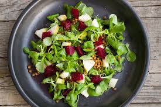

Ingredients
- Dirt
- Water
- Sun
- Fertalizer
- Seeds:
- Lettuce Seeds
- Spinach Seeds
- Radish Seeds
- Carrot Seeds
- Or any other vegetables you like!
Instructions
- Take seeds and put in dirt
- Water seeds/dirt regularily
- Make sure it gets sun
- Fertalize as needed
- When plants are ready to harvest:
- Harvest plants
- Wash plants
- Cut plants with knife
- Put plants in bowl
- Eat Plants